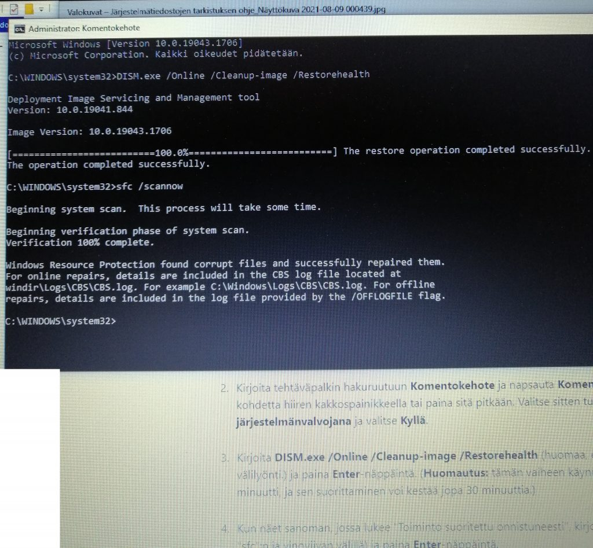

(alempana suomeksi)
In English
DeBloating Win10 or Win11
- Before doing any cleanup, boot computer with Puppy Linux or Linux Mint USB stick or CD/DVD, and copy all important files from C:\Users etc to external 4TB USB3 harddrive (or similar). When doing debloating, it’s too easy to delete files by accident.
- Click magnifying class, find with it “Startup programs” or something similar. There uncheck most of the programs, so they don’t start when booting. Then reboot computer.
- Download newest Jellybean Keyfinder free version, install it, and copy your Windows product key etc details somewhere safe, if there is need to install Windows later.
- At file manager, delete what is possible from C:\Windows\Temp, ignore other files.
- Click magnifying class, find with it “Remove temporary files” or “temporary files” or something similar. There uncheck Dowloads and Trashcan, to not delete files in those. Check others and delete those temporary files.
- Note: Microsoft Defender is free AntiVirus included with Windows. When you remove all other antivirus software, Defender starts working, or you can turn it on. Defender also has some settings for to stop file encrypting bitcoin demanding ransomware, it is best to turn all protection settings on if possible.
- Click magnifying class, find with it “Add Remove software”. If you have AVG Antivirus, it is only possible to uninstall it with this separate app https://www.avg.com/en-ww/avg-remover . Uninstall also: Antivirus, Online Backup, TSA Adware Removal Tool, Spyware Doctor, TotalAV, Spikes Security, WebTitan, Ad-Aware, VIPRE Ultimate Security, Norton, McAfee, Avast, WebRoot SecureAnywhere, Kaspersky, Panda Antivirus, WebRoot SecureAnywhere, F-Secure, ESET, BitDefender (BUT NOT MICROSOFT DEFENDER BECAUSE IT IS FREE ANTIVIRUS INCLUDED WITH WINDOWS), Avira, Lock, Google Backup, Google Drive Desktop, Malwarebytes, CCleaner, SpyBot Search and Destroy, any cleaner apps, SpyHunter, SuperAntispyware, Adaware Antivirus, OpenOffice (you get newest LibreOffice here instead https://www.libreoffice.org), Microsoft Mesh (there can be many differet language versions), Adobe Flash, Adobe AIR, all games you don’t recognize like Candy Crush, all news apps, all ZIP RAR ARJ apps like WinZip WinRar PeaZip etc (you get newest 7zip from here instead https://www.7-zip.org), all PDF reader apps like Adobe Reader Foxit Reader etc (you get newest SumatraPDF instead from here https://www.sumatrapdfreader.org ) . Also uninstall all apps that show ads, are trials, or require registering or payment, when starting those apps. After removing those, reboot.
- Check that Windows Defender is enabled and running.
- At Microsoft Shop app, click books icon Library, install all updates.
- If you would like to try to install Windows Updates, DO NOT INSTALL ANY PRERELEASE UPDATES because most likely they would make Windows not boot properly.
- Click magnifying class, find with it “Windows Update”.Always after installing big updates, remove temporary files like in step 5 and reboot.
- If you are doing something that requires a lot of speed, like compiling code, or copying a lot of files, temporarily turning off Windows Defender does improve speed. After that big operation, turn on Windows Defender.
- If you are paying for some antivirus you removed at step 7, you can cancel paying for those, by contacting someone where you got that paid antivirus, like your Internet provider.
- If LibreOffice from https://libreoffice.org is enough for your use, and can open and edit all your documents, you can cancel paying for Microsoft Office.
Suomeksi:
Win10 ja Win11 koneen nopeuttaminen
Ennenkuin alkaa mitään tehdä, jos mahdollista, olisi hyvä kopioida koneesta kaikki tärkeät tiedostot talteen esim. ulkoiselle USB3-kovalevylle.
Alapalkin suurennuslasi hausta, etsi “Käynnistettävät ohjelmat”, sieltä poista ruksi suurimmasta osasta ettei ne käynnisty konetta käynnistäessä. Sitten käynnistä kone uudelleen.
Alapalkin suurennuslasi hausta, etsi “Väliaikaiset” tai “Tilapäiset tiedostot”, ja sieltä poista kaikki muut paitsi Lataukset kansion sisältö. Tarkista myös onko roskakorissa mitään tärkeää, ennenkuin tyhjennät sen. Sitten käynnistä kone uudelleen.
Lisäksi allaolevasta VPN kohdasta turhien ohjelmien poisto.
Mikä on VPN ? Kuten Freedome, Tor, tietoturva, jne?
VPN tarkoittaa sitä, että esimerkiksi käyttäessä pankkiyhteyksiä, oman tietokoneesi ja pankin välillä on joku muu tietokone, jonka kautta nettiselailu jne kulkee. Tällaisen tapauksen huomatessaan voi pankkipalvelu heti lukita pankkitunnukset.
VPN ohjelmia ovat esimerkiksi:
1) F-Secure Freedome, joka on tehty sitä varten, että VPN-putken kautta voidaan valita minkä kotimaan tai ulkomaan tietokoneen kautta nettiselailu jne kulkee. Tästä voi olla hyötyä, jos haluaa esim. katsoa TV-sarjoja USAlaisena, silloin kun ne on sallittu vain USAssa. Mutta haittaa siitä on, jos yrität yllättäen ulkomaisen tietokoneen kautta tulla kotimaiseen pankkiin, silloin pankkitunnukset menee lukkoon.
2) Elisa Tietoturva, saattaa sisältää Freedomen, tai muun VPN putken
3) DNA Tietoturva, saattaa sisältää Freedomen, tai muun VPN putken
4) Joku muu tietoturva, esim Avast jne, voi sisältää jonkin VPN putken
5) Tor, esim. Whonix, Tails, Qubes OS, Brave yksityisyys Tor-välilehti, jne. Tämä voi olla turvatonta, se tietokone jolta VPN-putki tulee takaisin nettiin pystyy ehkä muuttamaan sivujen sisältöä ja tekemään jotain ei-mukavaa.
Windows 10 ja 11 mukana tulee Windows Defender tietoturva, eli kannattaa poistaa kaikki muut VPN ja tietoturva ja cleaner ja optimize ohjelmat, ja varmistaa että Windows Defender on kytkettynä päälle ja toimii.
Alapalkin suurennuslasi hausta, etsi “Lisää Poista sovellus”, sieltä poista esim: AVG Antivirus tällä ohjelmalla https://www.avg.com/en-ww/avg-remover , sekä: Antivirus, Online Backup, TSA Adware Removal Tool, Spyware Doctor, TotalAV, Spikes Security, WebTitan, Ad-Aware, VIPRE Ultimate Security, Norton, McAfee, Avast, WebRoot SecureAnywhere, Kaspersky, Panda Antivirus, WebRoot SecureAnywhere, F-Secure, ESET, BitDefender, Avira, Lock, Google Backup, Google Drive Desktop, Malwarebytes, CCleaner, SpyBot Search and Destroy, kaikki cleaner ohjelmat, SpyHunter, SuperAntispyware, Adaware Antivirus, OpenOffice (uusin LibreOffice voidaan ladata osoitteesta https://fi.libreoffice.org), Microsoft Mesh (voi olla monta eri kielistä versiota), Adobe Flash, Adobe AIR, kaikki pelit joita et tunnusta esim. Candy Crush, kaikki uutisohjelmat, kaikki ZIP RAR ARJ ohjelmat kuten WinZip WinRar PeaZip etc (uusin 7zip löytyy osoitteesta https://www.7-zip.org), kaikki PDF luku ohjelmat kuten Adobe Reader Foxit Reader etc (uusin SumatraPDF löytyy osoitteesta https://www.sumatrapdfreader.org ) . Myös poista kaikki ohjelmat jotka näyttää mainoksia, on kokeiluversioita (trial version), tai vaatii rekisteröintiä tai maksua, kun ohjelman käynnistää. Näiden poistamisen jälkeen, käynnistä kone uudelleen.
Nettiselaimissa voi olla myös turhia lisäosia (AddOn, Plugin). Poista ylimääräiset, jos niiden nimi on ylläolevassa listassa. Tärkeintä on asentaa ja olla mainospoisto Ublock Origin.
Päivityksiä voi asentaa, mutta älä asenna mitää prerelease/esiversio/testiversio päivityksiä, koska ne voi sotkea koneen.
Älykännykät, tabletit jne
Samantapaisia turhia ohjelmia (kuin mainittu yllä) voi myös olla älykännykässä, tabletissa, jne. Poista ne, käynnistä laite uudelleen. Jos maksat joistakin ohjelmista, peru niiden maksaminen, ja poista ne ohjelmat.
Yleissääntö
Yleissääntönä siis on, että laitteet ovat erittäin hitaita, jos niissä pyörii kännistettynä 100 ylimääräistä ohjelmaa. Laitteiden mukana tulee tietoturva toimintoja. Poista kaikki ohjelmat jotka näyttää mainoksia tai on kokeiluversioita tai maksullisia.
Jos Windows jollakin tapaa vahingoittunut, korjaus
